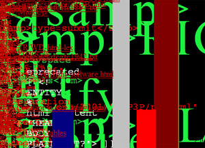

 This node addresses HTML fundamentals. The Hypertext Markup Language is declartive, rather than imperative (eg Java or C++). Intra-document markup is tree structured, while inter-document links can represent directed graphs. HTML documents consist of a HEAD element and the BODY element. Children of the HEAD include TITLE, SCRIPT, STYLE, META, and LINK. Children of the BODY include block level elements and text level elements.
reading: HTML Basics
Tutorials, specs, and commentary from Hot Wired. Historically, Wired magazine and this site that was once part of it, received high visibility during the "web revolution" of the nineties, which was when this medium came to the forefront of society.
reference: HTML 3.2 Specification
This specification is produced and maintained by the World Wide Web consortium, an international standards body. It defines the language for much of today's web practice, though, unfortunately, dealing with deviations from the spec are a normal part of a developer's life. This is the specification for basic HTML.
example: NY Times
The New York Times web site is complex, rapidly changing, full of content. They're stilling doing it all with old style HTML -- lots of tables, no stylesheets. Do a View Source on their homepage! You can tell this gets generated by a publishing system, not a person. Still, its somewhat readable.